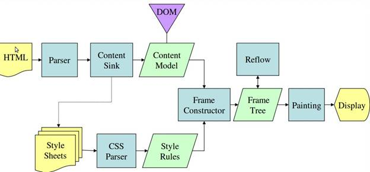

Browser Internals
An Introduction
Main functionality
The main function of a browser is to present the web resource you choose, by requesting it from the server and displaying it in the browser window. The resource is usually an HTML document, but may also be a PDF, image, or some other type of content.
Common User Interface
All the browsers have common user interface, although it is not defined in any formal specification:
- Address bar for inserting a URI
- Back and forward buttons
- Bookmarking options
- Refresh and stop buttons for refreshing or stopping the loading of current documents
- Home button that takes you to your home page
The browser's high level structure

User Interface
Includes the address bar, back/forward button, bookmarking menu, etc. Every part of the browser display except the window where you see the requested page.
Browser Engine
Marshals actions between the UI and the rendering engine.
Rendering engine
Responsible for displaying requested content. For example if the requested content is HTML, the rendering engine parses HTML and CSS, and displays the parsed content on the screen.
Networking
For network calls such as HTTP requests, using different implementations for different platform behind a platform-independent interface.
UI backend
Used for drawing basic widgets like combo boxes and windows. This backend exposes a generic interface that is not platform specific. Underneath it uses operating system user interface methods.
JavaScript engine
Used to parse and execute JavaScript code.
Data Persistence
This is a persistence layer. The browser may need to save all sorts of data locally, such as cookies. Browsers also support storage mechanisms such as localStorage, IndexedDB, WebSQL and FileSystem.
Rendering engines
Main flow

WebKit rendering engine

Gecko rendering engine

A note on browser parsers
- HTML Parser - custom build, fault tolerant and re-entrant (discussed later)
- CSS Parser - has BNF defined grammar
- JavaScript Parser - has BNF defined grammer
HTML parsing

HTML parsing - dynamic markup insertion
- document.open()
- document.close()
- document.write()
- document.writeln()
HTML parsing - dynamic markup insertion
document.write() and friends blocks HTML parser, which blocks render tree construction, which subsequentely blocks layout and paint phase. In the end all of this leads to to big delays in the critical rendering path.
HTML parsing - example
<html>
<body>
<p>
Hello World
</p>
<div> <img src="example.png"/></div>
</body>
</html>
HTML parsing - example

Quick quiz
Why it's recommended to have CSS files referenced in the HEAD and JavaScript files just before the BODY closing tag?
CSS
- Tells the browser what should be part of the render tee (element with display:none is not part of the render tree)
- Has to be downloaded and parsed, no incremental CSSOM construction, unlike HTML parsing
- Blocks rendering
- Since JavaScript might need CSSOM data, CSS also blocks JavaScript execution
JavaScript
- SCRIPT tag blocks HTML parser
- HTML 5 adds async and defer to mitigate HTML parser blocking
- Execution is single threaded
- Interaction with outside world is asynchronous. AJAX request, user events, etc all are handled asynchronously
JavaScript
- Single threaded, means no Thread.sleep() or equivalent
- You can't "block" JavaScript execution. You can ONLY defer execution via setInterval() or setTimeout()
- Browser uses event queue for EVERYTHING, user events, timer events, networks events, paint/redraw etc
- If processing an event queue item takes too long the browser freezes
- Race conditions are still possible, especially when using AJAX and shared variables
JavaScript
- There is no block level scoping, if not declared with var in a function, it's globally accessible
- Immediately Invoked Function Expression AKA (function(){}()) is used to avoid global namespace pollution
- try / catch / finally not so useful in asynchronous context
Demo time
JavaScript + Web APIs + timer events + event queue visualization
Page loading
- DOM ready is abused, place element just before closing BODY tag and you should be good
- DOM ready fired when DOM tree is constructed
- Window load fired when DOM tree is constructed and all resources have been loaded
Waiting for DOM elements
Usually when script is added to HEAD, but depends on HTML element being available. There are two approaches:
- "Polling" via setInterval()
- MutationObserver or Mutation Events (this has been deprecated). Using MutationObserver we can find out which elements are added, removed, inserted into DOM.